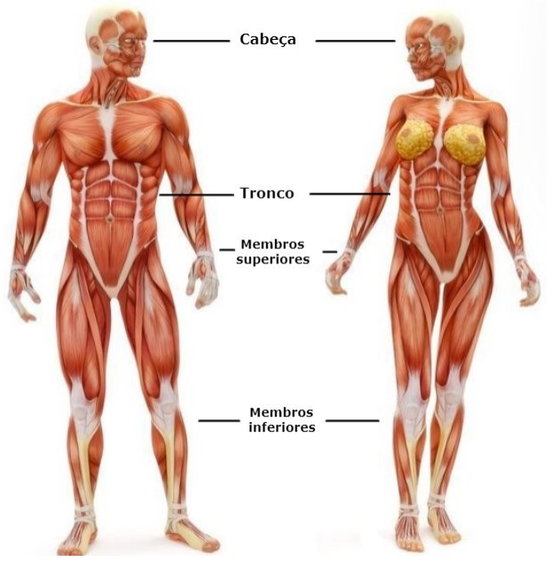
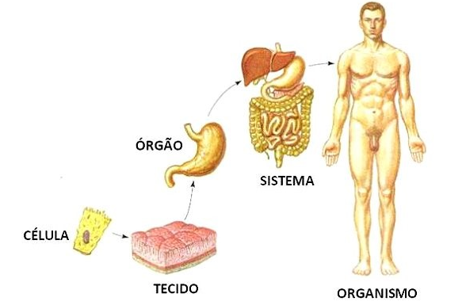
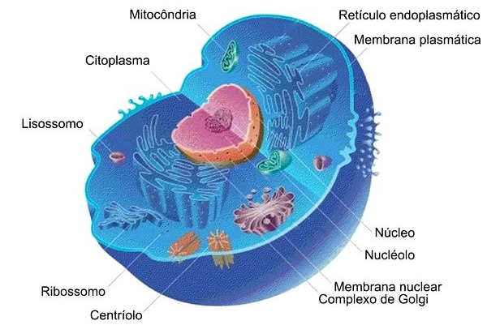
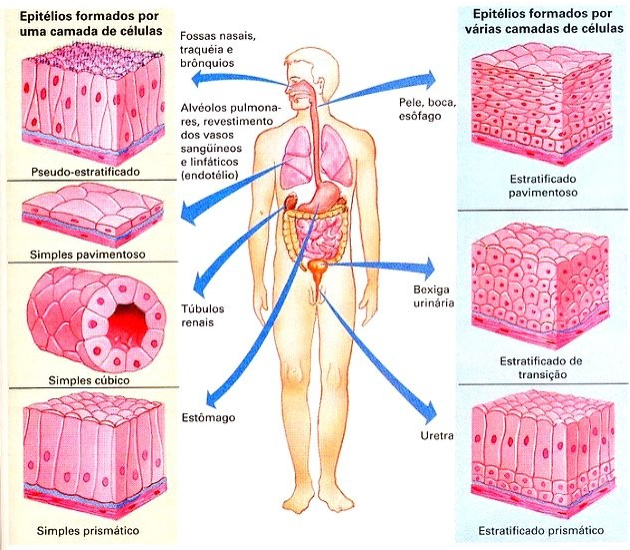
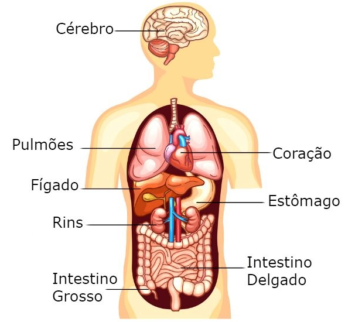
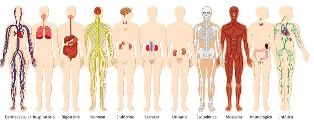

Introdução ao Corpo Humano
Introdução:
O corpo humano é constituído por diferentes partes, entre elas, a pele, os músculos, os nervos, os órgãos, os ossos, etc.
Cada parte do corpo humano é formada por inúmeras células que apresentam formas e funções definidas. Além disso, existem os tecidos, órgãos e sistemas, os quais funcionam de modo integrado.
Podemos comparar nosso corpo a uma máquina complexa e perfeita com todas as suas partes funcionando em sincronia.

O corpo humano é dividido em três partes básicas: cabeça, tronco e membros superiores e inferiores.
A descrição anatômica considera que o corpo deve estar em posição ereta, em pé, com o rosto voltado para a frente, membros superiores esticados e paralelos ao tronco, com as palmas voltadas para a frente, os membros inferiores devem ficar unidos. Essa é a chamada posição anatômica.
Níveis de Organização do Corpo Humano:

O corpo humano é formado por estruturas simples como as células, até as mais complexas como os órgãos.
O nível de organização do corpo humano é a seguinte: células, tecidos, órgãos, sistemas e organismo. Cada uma dessas estruturas consiste em um nível hierárquico até a formação de todo o organismo.
Conheça melhor cada uma das estruturas que fazem parte da organização do corpo humano:
Células:

As células são estruturas formadas por três partes básicas a membrana plasmática, citoplasma e núcleo.
Cada célula do corpo pode variar quanto a forma (estrelada, alongada, cilíndrica etc.), tamanho e ao tempo de vida. As células ósseas, por exemplo, duram vários anos, enquanto as células da pele se renovam entre 35 e 45 dias.
Cada tipo de célula se desenvolve para desempenhar uma função no organismo. A célula muscular, por exemplo, é capaz de se contrair. A hemácia transporta oxigênio para todo o corpo. A célula nervosa é capaz de receber e transmitir estímulos.
Tecidos:

A vida do ser humano começa com uma única célula. A partir daí, ela se divide e origina duas novas células, que também se dividem e formam mais duas e assim sucessivamente.
Durante a formação do feto, no útero materno, as células vão se desenvolvendo, conforme sua localização e função no organismo. Esse processo é chamado de diferenciação celular.
No corpo humano existem muitos tipos de células, com diferentes formas e funções. As células trabalham em grupo, estão organizadas de maneira integrada, desempenhando juntas, uma função determinada.
Esses grupos celulares formam os tecidos. Os tecidos do corpo humano podem ser classificados em quatro tipos:
- Tecido Epitelial
- Tecido Conjuntivo
- Tecido Muscular
- Tecido Nervoso
Órgãos:

Os tecidos, da mesma forma que as células, também se agrupam. O conjunto de tecidos que desempenham determinada função recebe o nome de órgão.
Em geral, um órgão é formado por diferentes tipos de tecidos.
Vários órgãos formam o corpo humano, entre eles, coração, pulmão, cérebro, estômago, intestino, fígado, pâncreas, rins, ossos, baço, olhos, etc. A maior parte dos órgãos estão localizados na região do tronco.
A pele é o maior órgão do corpo humano.
Sistemas:

Um conjunto de órgãos que atuam de modo integrado constitui um sistema. Os sistemas do corpo humano desempenham funções específicas, porém, atuam de modo integrado.
O corpo humano é formado de diversos sistemas: respiratório, circulatório, digestório, cardiovascular ou circulatório, muscular, nervoso, endócrino, excretor, linfático, reprodutor e ósseo.
Cada sistema apresenta sua função específica. O sistema respiratório, por exemplo, é responsável pela absorção do oxigênio do ar pelo organismo e da eliminação do gás carbônico retirado das células.
Organismos:
Por fim, o conjunto de todos os sistemas em funcionamento constitui o organismo que em conjunto mantém a sobrevivência do indivíduo.
O corpo humano é formado de diversos sistemas: respiratório, circulatório, digestório, cardiovascular ou circulatório, muscular, nervoso, endócrino, excretor, linfático, reprodutor e ósseo.
Assim, o organismo representa o mais alto nível de organização.
Curiosidades sobre o corpo humano:
- O maior osso do corpo humano é o fêmur, o osso da coxa da perna. Já o menor osso é o estribo, localizado no ouvido interno.
- O coração de um adulto bate cerca de 100 mil vezes por dia.
- Em média, 2 kg do peso corporal é representado por bactérias que habitam nosso organismo.
- Os rins filtram aproximadamente 1,3 litros de sangue por minuto.
- Um impulso nervoso pode alcançar até 360 km/h.
- Um adulto possui 206 ossos, enquanto o bebê possui 300.
Voltar
Ir para Exercícios